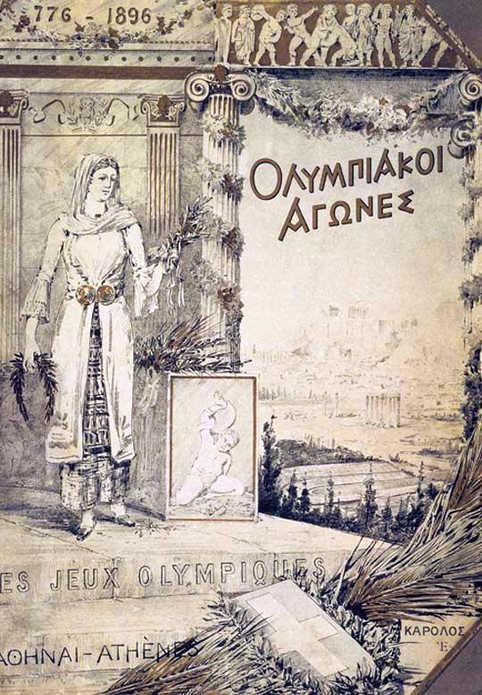

Atenas inaugura ante una multitud los primeros Juegos Olímpicos de la era moderna
En el estadio Panathinaikó, vestido de mármol nuevo, el rey Jorge declaró abiertos los juegos ante decenas de miles de almas: doscientos cuarenta y un atletas de catorce naciones competirán durante diez días. Teodosio los prohibió hace mil quinientos años; esta tarde volvieron.

Bajo un sol de fiesta y ante una muchedumbre que desbordaba las gradas de mármol y trepaba a las colinas vecinas —se habla de más de sesenta mil almas, la mayor reunión pacífica que Grecia recuerde—, el rey Jorge I se puso de pie esta tarde en el estadio Panathinaikó y pronunció la fórmula que quince siglos esperaban: «Declaro abiertos los primeros Juegos Olímpicos internacionales de Atenas». Sonó entonces el himno compuesto por el maestro Samaras sobre versos del poeta Palamas, cantado por coros y bandas, y la ovación obligó a repetirlo. Hoy mismo hubo campeón: un estudiante norteamericano, James Connolly, ganó el salto triple, primer vencedor olímpico en mil quinientos años.
La resurrección tiene un autor: el barón Pierre de Coubertin, un francés de treinta y tres años convencido de que los pueblos que compiten en el estadio se baten menos en el campo de batalla, y de que el músculo educa el carácter tanto como el libro. Hace dos años reunió en la Sorbona un congreso que votó restablecer los juegos y fundó un Comité Olímpico Internacional presidido por el griego Vikelas; se acordó entonces que la primera cita fuera aquí, en la tierra madre de la idea, aunque más de un escéptico predijo que Grecia, con las arcas exhaustas, jamás podría costearla.
Que pudiera se debe en buena parte a un solo hombre: Jorge Averoff, comerciante griego de Alejandría, pagó de su bolsillo la restauración en mármol pentélico del viejo estadio que Herodes Ático había vestido de blanco en tiempos romanos, y la ciudad le descubrió ayer una estatua a la puerta, en vísperas de la fiesta. En cuanto a los juegos antiguos, más de mil años se celebraron en Olimpia cada cuatro veranos, con tregua sagrada de por medio, hasta que el emperador Teodosio los prohibió con las demás fiestas paganas. La fecha de hoy tampoco es azar: coincide con el aniversario de la independencia griega, que esta nación celebra un 25 de marzo de su calendario.
Los atletas son doscientos cuarenta y uno, de catorce naciones, todos hombres y casi todos viajeros por su cuenta: estudiantes, oficiales, empleados que pagaron su pasaje. Los norteamericanos, cuentan, confundieron los calendarios y llegaron a Atenas con el tiempo justo, entumecidos por diecisiete días de barco y de tren; su saltador Connolly había renunciado a su plaza en la universidad de Harvard antes que renunciar al viaje, y esta tarde la muchedumbre coreaba su nombre sin poder pronunciarlo. En los días que vienen se correrá, entre otras pruebas, una carrera nueva de cuarenta kilómetros, desde Maratón hasta este estadio, en memoria del soldado que, según la tradición, trajo de allí la noticia de la victoria y murió al darla.
No faltan lunares que el cronista debe anotar: no hay mujeres en las pistas, ni se anuncia que vaya a haberlas, y varias potencias enviaron delegaciones magras o ninguna. Y sin embargo, quien vio esta tarde a sesenta mil personas aclamar a un estudiante extranjero comprende que aquí se plantó algo. La próxima cita se anuncia para dentro de cuatro años en París, la ciudad de la torre de hierro de la que este diario dio cuenta, aunque muchos griegos protestan que los juegos son suyos y no deben viajar. Quede para los años venideros el veredicto; por hoy, baste decir que quince siglos no alcanzaron para matar una idea griega.